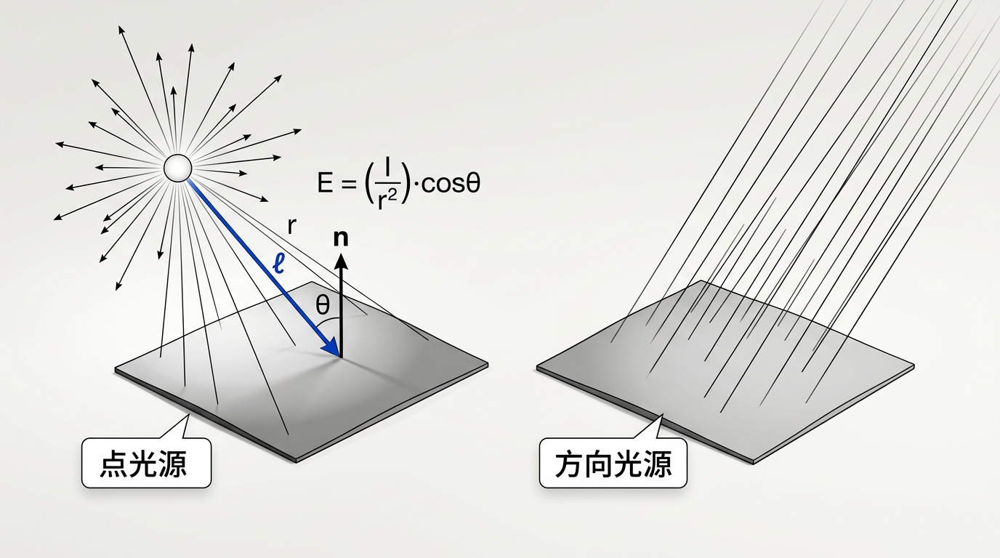
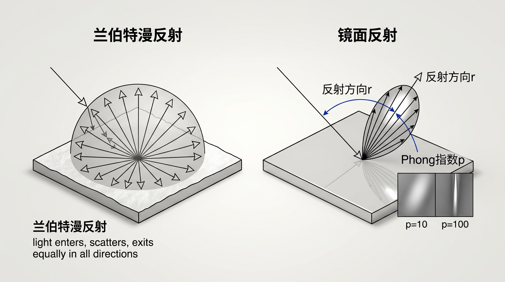
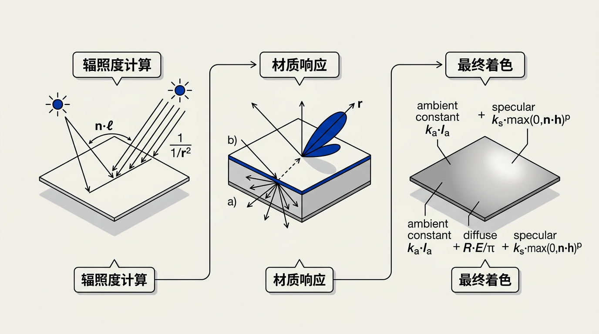

本讲义基于 Steve Marschner & Peter Shirley 所著《虎书》（Fundamentals of Computer Graphics）第5版第5章（p.114-125）表面着色。
着色是渲染的灵魂。本章讲解点光源与方向光源的辐照度计算、兰伯特漫反射、Phong/Blinn-Phong镜面反射、环境光的工程意义。
本版插画采用 Guizang 材质插画风格重新绘制。
E = (I / r²) · cos θ 中 cos θ 因子的来源——光在斜射时被"稀释"到更大的表面面积上。h = (ℓ + v) / |ℓ + v| 的计算优势及其物理直觉。L_a = k_a · I_a 如何防止阴影区域变纯黑，以及为什么它是必要的"下限保障"。
当我们渲染三维场景图像时——无论是使用光线追踪还是光栅化，无论是实时还是离线批处理——产生立体感视觉印象的关键因素之一是着色（shading），即根据场景中物体的形状及其与其他物体的关系为表面上色。在物理世界中，我们看到的大部分光都是反射光，而光反射的物理过程强烈地受到几何形状的影响，从而产生多种线索，人类视觉系统非常有效地利用这些线索来理解形状。
在计算机图形学中，着色的目的是为视觉系统提供这些线索，尽管目标因应用场景而异。在计算机辅助设计或科学可视化中，焦点在于清晰度：着色应该被设计为提供最清晰、最准确的三维形状印象。另一方面，在视觉特效或广告中，目标是最大化渲染图像与真实物体外观的相似度。在动画、虚拟环境或游戏中，目标处于中间地带：着色旨在实现艺术目的，包括描绘形状和材质，但不一定意图在字面上模仿现实。
用于计算着色的方程被称为着色模型（shading model），针对这些不同的应用已经开发出了一系列不同的着色模型。通常，它们都从简单的模型开始，这些模型为光反射的物理过程提供了一个有用的近似。从这个起点出发，可以添加额外的特性以增加真实感，或者修改或省略部分内容以使模型适合更抽象的风格。着色模型与渲染系统的其余部分相当独立——相同的模型可以在光线追踪和光栅化系统中使用。本章描述了一个基本的着色模型，适用于被点光源照明的非透明表面。这个模型可能足以满足简单的应用需求，并且它形成了更高级着色计算（如第 14 章所讨论的）的起点。
想一想：如果让你只用一种颜色画一个球体，它看起来是平的——一个圆盘。但当你加上高光和阴影后，它"立"起来了。着色本质上是用光的分布模式欺骗眼睛，让它以为看到了三维形状。你能想到日常生活中哪些物体主要靠光的变化来体现立体感？（提示：看一个白色石膏球在不同灯光下的外观）
在现实世界中，光从各个方向落在表面上。但对于光照建模，最简单的情况是光从单个方向到达；这始终是一种理想化，但它为那些相对于与表面的距离来说尺寸很小的光源提供了一个有用的模型——要么是因为它们确实很小（例如 LED 手电筒），要么是因为它们非常远（例如太阳）。
点状光源有两种类型：点光源（point source）小到可以视为一个点，但距离场景足够近，可以对不同表面产生不同的照明；而方向光源（directional source）不仅足够小（相对于其距离）可被视为点状的，而且距离如此之远以至于它均匀地照亮所有表面，并且无需跟踪其位置——只需跟踪其方向。手电筒和太阳分别是这两种光源类型的典型例子。

生活类比：想象一个裸露的白炽灯泡挂在房间中央。你站在灯泡正下方伸出手——手掌被照得很亮。如果你走到房间角落，手离灯泡的距离翻倍了，手掌上接收到的光只有原来的四分之一——不是一半，是四分之一！这是因为灯泡发出的能量在一个不断膨胀的球面上扩散，球面面积正比于距离的平方，所以单位面积上的能量反比于距离的平方。这就是 1/r² 衰减定律的直觉。
点光源由其在三维空间中的位置及其强度（intensity）I——即产生的光量——来描述。一个点光源可以向所有方向发光。一个重要的物理事实是：点光源产生的辐照度（irradiance）——即单位面积上接收到的光功率——随着距离的增加而减小。对于各向同性的点光源，能量以球面形式向外辐射；球的表面积随 r² 增长，因此任何固定面积上的光量按 1/r² 衰减。到达表面上一块区域的辐照度由下式给出：
E = (I / r²) · max(0, cos θ)
其中 r 是光源到表面点的距离，θ 是表面法线 n 与指向光源的方向 ℓ 之间的夹角。cos θ = n·ℓ（假设两个向量均已归一化）。max(0, ·) 因子确保背向光源的表面接收到零辐照度——在物理上，当光源位于表面背后时，表面不会被照亮（尽管在实践中，我们需要小心不要得到负的着色值）。
点光源照射的几何直观：当表面倾斜远离光源时，相同的"横截面积"投影到表面上更大的实际面积上——这稀释了单位面积的光量。这就是余弦因子的来源。在距离 r 处，来自强度为 I 的各向同性光源的辐照度在垂直入射时（θ = 0，cos θ = 1）等于 I/r²。
想一想：cos θ = n·ℓ，当表面法线 n 和光线方向 ℓ 垂直时（θ = 90°），cos θ = 0；当光线从背后照来时（θ > 90°），cos θ 为负。假设你不做 max(0, cos θ) 夹持，负的辐照度在物理上意味着什么？它在数值计算中会导致什么奇怪的现象？
方向光源是极为明亮且距离极远的点光源的极限情况。随着光源越来越远，比值 I/r² 在场景中的变化越来越小，对于方向光源，我们用一个常数 H 来替代它：
E = H · max(0, cos θ)
这个常数 H 可以被称为法向辐照度（normal irradiance），因为它等于光源位于表面法线方向时（θ = 0，cos θ = 1）的辐照度。方向光源通过指向光源的方向（而非位置）和法向辐照度 H（而非强度 I）来表征。来自方向光源的照明是均匀的，不会像点光源照明那样随距离衰减。这个模型是对远处光源的理想化——在太阳照射地球的尺度上，1/r² 项在不同表面之间几乎不变化，使得方向光源成为一个极好的近似。
想一想：为什么太阳适合用方向光源建模而不是点光源？提示：地球到太阳的距离约 1.5 亿公里，地球直径约 1.27 万公里。计算场景中最近点和最远点的 I/r² 比值差异——这个差异有多大？你能想到哪些情况下必须放弃方向光源近似、回归点光源公式？
现在我们有了计算辐照度（irradiance）的能力——辐照度描述了有多少光落在物体上——接下来要回答的问题是：物体如何反射这些光。这取决于物体的材质。在本章中，我们开发了一个基本模型，适用于带有可选光泽表面的彩色材质。这个模型背后的思想是：材质可以有一个决定物体整体颜色的基层（base layer），以及一个提供闪亮镜面反射的表层（surface layer）。我们将分别研究这两种最简单的模型。

生活类比：拿一张白纸和一个乒乓球。把纸放在台灯下，不管你从哪个角度看它，纸的亮度几乎一样——这就是漫反射（兰伯特反射）。光的路径是：光子进入纸张的纤维层，在纤维之间反复弹射，最终"忘记"自己最初来自哪个方向，从随机的方向射出。纸张没有闪亮的高光——因为它没有足够平滑的表层。与此对比，乒乓球有一个光泽表面——你会在它上面看到一个小小的明亮光斑（高光），随着你移动头部而滑动——那就是镜面反射。
最简单的反射类型是表面在所有方向上均匀地反射光。如果辐照度为 E，反射辐亮度（reflected radiance）L_r 为：
L_r = R · (E / π)
其中 R 是表面的反射率（reflectance）——即被反射的入射光的比例，范围从 0 到 1。除以 π 的因子是为了确保能量守恒：反射的总光通量不会超过接收到的光通量（这个因子需要等到第 14 章才会被完全解释）。反射率 R 对不同的光色可能不同，对于简单的颜色建模，只需对红、绿、蓝三个通道分别保持三个不同的反射率即可——这个着色方程分别对三个颜色通道独立执行。
这种理想的漫反射着色——通常被称为兰伯特着色（Lambertian shading），因为兰伯特的余弦定律是它建模的主要效果——单独来看产生一种平坦、粉笔状的外观。在物理上，它模拟的是在材质内部四处反弹的光，这些光"忘记"了它来自哪里，并随机地在各个方向上出射。兰伯特模型是纸张、哑光涂料、泥土、树皮、石头以及其他没有足够明显且平滑顶层表面以产生可见闪亮反射的粗糙材质的有效模型。
兰伯特反射的一个重要特性是其视角无关性（view-independence）：无论从哪个方向观察表面，亮度都完全相同。这与镜面反射形成直接对比——镜面反射是强烈视角相关的。在着色代码中，兰伯特项仅需要辐照度 E 和反射率 R，不需要视线方向 v。
想一想：如果兰伯特反射在所有观察方向上的亮度相同，那为什么一个被侧光照亮的兰伯特球体看起来一边亮一边暗？这个"亮暗"差别来自辐照度的变化（cos θ 在不同位置不同），而非反射的方向性——你能区分"光照不均匀"和"反射不均匀"这两个不同的概念吗？
生活类比：在一个晴朗的夜晚，看看月亮。如果把月亮想象成一个完美的漫反射球体，满月时它的中心应该最亮，边缘应该逐渐变暗（因为边缘的 cos θ 接近于零）。但实际观测正好相反——满月的整个盘面亮度几乎均匀，中心并不比边缘亮多少。这说明月球表面不是兰伯特表面。另一方面，如果你看一个干净的不锈钢水壶，你会发现一个明亮的光斑——光源的镜像——随着你移动头部而滑动。这个光斑就是镜面反射。你的额头上的油光也是镜面反射——皮肤表面的油脂形成了一层临时的"光滑表层"。
许多材质在某种程度上具有光泽——例如金属、塑料、光泽或半光泽涂料，或者许多植物的叶子。当你观察这些材质时，你会看到当你移动视点时反射随之移动；你可以将它们的颜色描述为视角相关（view-dependent）的，与兰伯特表面的视角无关颜色形成对比。反射的视角相关部分通常发生在材质的顶层表面，被称为镜面反射（specular reflection）。
最简单的一种镜面反射发生在完美光滑的表面——如镜面或水面：光以镜像方式反射，使得来自点光源的光仅在一个方向上可见。更一般地，对于非完美镜面（大多数真实表面），光被反射到一个以镜像反射方向 r = 2(n·ℓ)n − ℓ 为中心的叶瓣（lobe）中。一个广泛使用的近似是Phong 镜面模型，其中反射强度随偏离理想反射方向的角度的余弦的幂而变化：
L_s = k_s · I · max(0, r·v)^p
其中 k_s 是镜面反射系数（颜色），v 是指向视点的方向，p 是Phong 指数（Phong exponent），控制镜面高光的锐利度。较高的 p 值（例如 100）产生紧密、锐利的高光（类金属）；较低的 p 值（例如 10）产生更宽、柔和的高光（类塑料）。注意所有向量 r、v、n、ℓ 在使用前必须归一化——未能归一化这些向量是着色计算中最常见的错误之一。
想一想：为什么 Phong 模型中要取 cos 的 p 次幂？cos 本来的取值范围是 [0, 1]，对它取幂后，那些已经接近 1 的值（接近理想反射方向）几乎保持不变，而那些偏离理想方向较远的值（cos < 1）被压得更小——指数 p 越高，这种"选择性放大中心、压制边缘"的效果越强。这是一种简单的"集中度"控制——不用复数物理参数，一个数字就区分了粗糙和光滑。你能画出 p=1、p=10、p=100 时 (cos x)^p 的曲线吗？感受一下它对形状的控制力。
Phong 模型的Blinn-Phong 变体使用半程向量（half-vector）h = (ℓ + v) / |ℓ + v| 替代反射向量 r，并将镜面项计算为 (n·h)^p。半程向量是光照方向和视线方向中间的向量，计算成本显著更低（每次着色调用只需一次加法和归一化），并且产生的高光在物理上略微更合理。完整的 Blinn-Phong 着色方程结合了漫反射和镜面反射：
L = k_d · (E/π) + k_s · I · max(0, n·h)^p
其中 k_d 是漫反射系数（通常 k_d = R），k_s 是镜面反射系数。环境项将在第 5.3 节中加入以填充阴影。
想一想：半程向量 h 是光线方向 ℓ 和视线方向 v 的角平分线方向。对比原始 Phong 的反射向量 r：r 是 ℓ 关于 n 的镜面反射。当 h 恰好与 n 对齐时（即 ℓ 和 v 关于 n 对称时），两个模型给出相似的高光位置。但当光源和观察者方向不同时，Blinn-Phong 的半程向量方法在物理上为什么更合理？提示：思考微表面的法线分布——哪些微表面刚好能把 ℓ 反射到 v？
在代码中实现表面着色时，需要访问关于光源、表面和视线方向的信息。编写同时支持点光源和方向光源的清晰代码，最容易通过将辐照度计算（irradiance calculation）与反射光计算（reflected light calculation）分离来实现。辐照度仅取决于光源和表面几何形状，一旦已知，计算反射光仅取决于表面属性和视线几何形状。
基本的着色计算在光线追踪和光栅化系统中可以完全相同的方式进行——真正变化的只是输入值是如何计算的。计算辐照度需要：着色点 x（表面上的三维点）、表面法线 n（在 x 处垂直于表面）、光源位置 p（点光源）或光源方向 ℓ（方向光源），以及光源强度 I（点光源）或法向辐照度 H（方向光源，均为 RGB 颜色）。对于点光源，需要计算距离和光线方向，二者都可以从向量 p − x 简单得到：
r = |p − x|, ℓ = (p − x) / r
对于两种类型的光源，余弦因子最好使用点积计算——只要 n 和 ℓ 是单位向量，cos θ = n·ℓ。在实践中，计算辐照度时将点积夹持在零处是一个好主意，以确保即使在某些情况下光线方向背离表面法线，也不会得到负的着色值。这导出了我们视为官方的辐照度计算公式：
E_point = max(0, n·ℓ) · I / r² E_directional = max(0, n·ℓ) · H
辐照度 E（一个 RGB 颜色）描述了多少光落在表面上。为完成着色，我们根据材质计算反射光。完整的着色还需要：光线方向 ℓ（从 x 指向光源的单位向量，已作为辐照度计算的一部分）、视线方向 v（从 x 指向观察者的单位向量），以及描述表面材质属性的参数（对于本章的模型：R、k_s 和 p）。不要忘记 v、ℓ 和 n 都必须是单位向量。这些量的获取方式在光线追踪和光栅化系统之间差异很大，但实际的着色计算本身是相同的。
想一想：为什么作者强调要将辐照度计算和反射计算分离？如果每个材质（兰伯特、Phong、GGX……）都自己从头实现一遍光照衰减和余弦因子，会导致什么问题？这背后体现的是什么软件设计原则？
生活类比：想象你在一个只有一盏台灯照明的房间里看书。你放在桌下的手不应该完全漆黑——即使台灯的光线被桌面挡住了，周围墙壁反射的光和从窗户进来的微光仍然会照亮你的手。这就是环境光的作用。如果你用手机对着桌面底下拍张照片，你不会看到纯黑色——你会看到手和桌子底部虽然暗，但仍有细节可见。在计算机图形中，如果只计算直接光照，所有阴影区域都会被渲染成纯黑——环境光项就是为这些区域"兜底"的最小照明量。
点状光源是用于非常局部化的光源的模型，它们在接近单一方向产生大量光。其他类型的光源则不那么局部化——例如天空，或从房间墙壁反射的光。虽然这种扩展光源可以被精细地建模，但对于基本着色，我们需要一个真正简单的近似。因此我们做出环境光（ambient light）的假设：在所有方向上和场景中的所有位置上完全相同的光。我们进一步假设环境光仅被漫反射（因为没有光的方向，因此无法计算镜面着色）。这使得环境着色非常简单：它是一个常数！
通常，这个常数被分解为一个与材质相关的环境反射系数（ambient reflection coefficient）k_a 和一个与光源相关的环境光强度（ambient intensity）I_a 的乘积：
L_a = k_a · I_a
这个常数项被加到每个表面的反射辐亮度上。环境光项防止阴影完全变黑——即使在没有直接照明的区域中，表面也会有一个基础亮度。尽管环境光是对全局光照——光在表面之间反弹的复杂现象——的一种粗略近似，但它的简单性使其在基本渲染器中不可或缺。现代引擎使用环境光遮蔽（ambient occlusion，AO）、光照探针（light probes）和全局光照（global illumination）技术来超越这一恒定近似，这些将在第 14 章中讨论。
想一想：环境光项 L_a = k_a · I_a 不依赖于表面法线 n——它对场景中每个点、每个方向都施加相同的照明。这意味着一个完全被环境光照亮的球体会变成什么样子？它还会有"立体感"吗？为什么？这暴露了环境光近似的最严重缺陷——你能想到吗？
想一想：如果 k_a 设为 0（关闭环境光），场景中的所有阴影区域将变成纯黑色。但真实世界中阴影不是全黑的——为什么？列出至少三个真实世界中填充阴影的光源来源。这些来源中哪些是现代引擎用 AO、光照探针、屏幕空间反射来模拟的？
解答：两个关键观察：
（a）非兰伯特效应——边缘亮度不变：如果月亮是完美的兰伯特（漫反射）表面，它的亮度应该从中心向边缘逐渐变暗——因为光照角度从正对（中心，cosθ=1）逐渐变为掠射（边缘，cosθ≈0）。但实际观测显示，满月时整个月盘亮度几乎均匀，边缘并没有变暗。这意味着月球的表面反射不符合兰伯特余弦定律——它的表面比漫反射模型预测的更"粗糙"且更"反向散射"（朝向光源回弹更多光）。
（b）无反相（opposition effect）高光：当太阳-观测者-月球几乎成一条直线时（满月正对），月球上应该出现显著的 Phong/Blinn-Phong 高光——因为此时半程向量 h 恰好与法线 n 对齐，镜面项达到最大。但实际上，满月的月面没有这个高光——亮度均匀分布在盘面上。这说明月面不是光滑的——它几乎完全由粗糙的碎石粉末（表岩屑）覆盖，镜面反射被衍射和体散射取代。
解答：两个特征：
（a）掠射角处亮度增强：兰伯特模型预测在 cosθ 小的掠射角处亮度减弱，但天鹅绒在掠射角处亮度反而增强——当你从侧面看天鹅绒时，它比从正面看更亮。这是因为天鹅绒的纤维结构产生了"遮挡阴影"——在正视角下，你能看到纤维间的深色阴影缝隙；在掠射角处，你看的是纤维的尖端，遮蔽被绕过。
（b）非标准高光分布：天鹅绒的高光不是 Phong 模型预言的亮点——它呈现为一种柔和的、方向性的光晕，更像毛皮或刷子表面漫反射光和镜面反射光的混合，因为纤维的微几何结构使得镜面反射方向分布极宽（有效"粗糙度"极高）。
要精确模拟天鹅绒，需要专用的 BRDF 模型（如 Ashikhmin-Shirley 各向异性模型或专用的天鹅绒/织物模型），它们将纤维的遮挡和体积散射纳入考虑。
解答：这归结于镜面反射的物理本质。
塑料（电介质/非金属）：塑料中的镜面反射来自表面——光在塑料表面被反射，没有进入材料体。菲涅尔反射在电介质-空气界面是与波长无关的（或波长依赖很弱）——所有可见光波长以相同比例反射。所以高光的颜色就是光源的颜色（通常是白色）。漫反射颜色来自进入塑料体后被散射和选择性吸收后再次出射的光——所以塑料本身看起来有颜色。
金（导体/金属）：金表面是导电的——自由电子与入射光相互作用。金的复数折射率的虚部很大且与波长强相关——蓝色波长被强烈吸收（转换为焦耳热），而红色和绿色波长被高效反射。所以在金表面，即使是直接来自白色光源的镜面反射也带有金的颜色——高光就是金色的。金属的颜色来自镜面反射本身的波长选择性，这与塑料的漫反射机理根本不同。
这就是为什么在 Phong 模型中塑料的镜面颜色设为白色（k_s·I = 白色），而金属的镜面颜色设为金色/铜色等——虽然这个简化模型不区分菲涅尔效应，但这一规则经验性地捕获了电介质 vs 导体的本质区别。
解答：点光源发出功率 Φ（单位 W）。在距离光源 r 处的球面上，功率均匀分布——辐照度 E = Φ / (4πr²)（球面积）。如果是各向同性点光源，在方向 ℓ 上的辐射强度 I = Φ / (4π)（单位 sr），则 E = I / r²。
当光以角度 θ 照射表面时：有效接收面积 = dA·cosθ（投影面积）。辐照度（功率/面积）= I·cosθ / r² = I·(n·ℓ) / r²。
如果 n·ℓ < 0：光从表面背后照射，物理上表面接收不到光——cosθ 应为 0 而非负值。所以着色计算中必须做：max(n·ℓ, 0)。不夹持会导致"负光"——使表面变暗超过零（或更糟，在相加各光源时错误地减去光照），这在数学上等价于从后方摄入的"反向光"。正确夹持确保了单向性——光只从前方到达表面。
解答：
Phong 原始模型：镜面项 = k_s·(r·v)^p，其中 r = 2(ℓ·n)n − ℓ（镜像反射方向）。需要计算 r 然后与 v 做点积。
Blinn-Phong 改进：镜面项 = k_s·(n·h)^p，其中 h = (ℓ+v)/|ℓ+v|（半程向量）。两者角度的关系：n·h ≈ (r·v)^{1/2} 当光源和观察者不太分散时。
优势：
1. 计算更简单：h = normalize(ℓ+v) 只需一次加法和归一化，而 r = 2(ℓ·n)n−ℓ 需要两次点积和一次向量减法。在着色器中对每个片元每条光源做一次——Blinn-Phong 的节省在 tiled/forward+ 渲染中显著。
2. 物理上更合理：半程向量是微表面法线的中位方向（用微表面理论的术语）——它与法线 n 的夹角度量了表面微结构中刚好将 ℓ 反射到 v 的微表面的比例。原始 Phong 缺少这一物理对应。
3. 避免 r·v 边界问题：当 r 和 v 的夹角接近或超过 90°（观察者在大掠射角）时，r·v 变负需要夹持——这在 Blinn-Phong 中很少发生，因为 n·h ≥ 0 只要 ℓ 和 v 都在 n 的同一半球内。
解答：分离意味着：第一步计算到达表面点的总辐照度 E（所有光源在表面点贡献的总和），第二步计算反射辐亮度 L_r = f_r(ℓ,v)·E——将辐照度乘以 BRDF 反射率。
优势：
1. 模块化：辐照度计算（遍历光源、计算 cosθ、衰减和阴影）与表面反射（兰伯特/Phong/GGX/任何 BRDF）解耦——可以在不触碰光照代码的情况下切换材质。
2. 物理正确：反射模型（BRDF）定义了辐照度→辐亮度的映射——不同 BRDF 可以通过相同的辐照度值预测不同的外观，不需要每个 BRDF 重新实现光衰和阴影。
3. 对延迟着色（deferred shading）至关重要：在 G-buffer 阶段写入表面属性（法线/粗糙度/反照率），在光照阶段对每个光源只用一次 BRDF 计算——辐照度计算和反射计算天然分开，如果不分离则延迟着色根本做不了。
4. 便于环境光照集成：辐照度不仅来自点/方向光源——环境贴图、SH 探针、SSAO 都贡献辐照度。分离后只需在辐照度累加阶段添加新的辐照度来源，反射计算保持不变。
Q1: Phong 着色似乎是一个巨大的"黑魔法"凑合方案——是这样吗？
A: 是的。如果你试图匹配真实表面的测量数据，Phong 模型不是一个很好的模型。它不守恒能量（反射的能量可以超过入射能量），不尊重互易性（交换光源和眼睛会改变预测亮度），也没有物理基础——它没有一个有意义的表面微结构。然而，它极其简单且在实践中非常好用。对于实时游戏、预览渲染和非照片级应用，Phong 提供了"足够好"的金属/塑料区别和方向性高光。追求真实感的渲染已经移向了基于微表面理论（如 GGX / Cook-Torrance）的模型——这些模型具有物理意义，保证了能量守恒和互易性，并与实测的 BRDF 数据匹配得更好。但微表面模型也保留了 Phong/Blinn 的精神——法线分布函数 NDF 就是 Phong cos^p 的物理化版本。
Q2: 我讨厌调用 pow()——Phong 光照时有没有办法避免它？
A: 有。最简单的办法是只使用 2 的幂指数（2, 4, 8, 16, 32...）——这时可以用连续乘法替代 pow()：例如 (n·h)⁸ = sqr(sqr(sqr(n·h)))，仅需 3 次乘法，比 pow() 快一个数量级且没有数值不精确的问题。在实际中，pow() 的指数被限制到 2 的幂对视觉效果影响极小——从 p=8 到 p=10 的差别肉眼几乎看不出来，但 p=4 到 p=8 有明显区别，所以 2^n 的间隔在感知上是合理的。最现代的着色器在 GGX 中使用平方和平方根操作而非 pow——各向同性 GGX 的 NDF = α²/(π·(cos²θ(α²−1)+1)²)，它只需要平方和一个倒数，没有幂运算。
Q3: 环境光项到底是什么？为什么不直接用物理正确的全局光照？
A: 环境光项 k_a·I_a 是对间接光照（indirect illumination）的最简可能近似——它假设来自环境的漫射光在各处均匀照射每个表面。如果没有它，所有不直接面对光源的表面（阴影内、远离光源）都会被渲染为纯黑色——这显然不现实（真实世界中阴影不是全黑的，靠天光和周围物体的反射照亮）。是的，全局光照（GI）是物理正确的解法，但在很多场景中计算量过大或需要离线渲染。环境光项是一个"下限保障"——确保没有像素是纯黑的，即使计算的精度不够。现代引擎通常用更复杂的替代方案（球谐光照探针、屏幕空间环境光遮蔽 SSAO、漫反射环境贴图）取代常数环境光项，但核心理念相同：为直接光照无法照到的区域提供一个最低限度的间接光照。
Q4: 什么是 BRDF？它和 Phong/兰伯特模型是什么关系？
A: BRDF（Bidirectional Reflectance Distribution Function，双向反射分布函数）f_r(ω_i, ω_o) 是一个函数，给定入射方向 ω_i 和出射方向 ω_o，返回反射辐亮度与入射辐照度之比：f_r = dL_o / dE_i。它是材质反射特性的完整描述。兰伯特模型对应一个常数 BRDF：f_r = R/π（所有方向反射相同）。Phong 模型对应一个"非物理"的 BRDF：f_r = k_d/π + k_s·(r·v)^p / (n·ℓ)。之所以说非物理，是因为 Phong BRDF 可能不满足能量守恒和互易性——但它在图形学中被当作"拟 BRDF"广泛使用。微表面 BRDF（如 Cook-Torrance、GGX）是物理正确的 BRDF——它们从表面的微观几何（微表面法线分布、遮蔽函数、菲涅尔反射）推导出来。所以 Phong/兰伯特是早期、简单、经验性的 BRDF；微表面模型是现代、物理正确、复杂的 BRDF。
Q5: 为什么塑料和金属的光照不一样？我该怎么设置 k_d, k_s？
A: 根本区别在于导体的镜面反射是带颜色的，而且是主要的光反射方式（没有漫反射）。塑料（电介质）的镜面反射是无色的（所有波长相同反射），且镜面只是一个薄层在表面，大部分光进入物体后以漫反射形式散射出来。经验规则：塑料：k_d = 材质的基础颜色/反照率（如红色塑料 k_d=(1,0,0)），k_s = 接近白色的小值（如 (0.04, 0.04, 0.04)——菲涅尔反射在法线方向约 4%）。金属：k_d = (0,0,0)（金属没有漫反射），k_s = 金属的颜色（如铜 k_s≈(0.95, 0.64, 0.54)）。但注意：物理正确的方法不是直接在 Phong 中改 k_s，而是使用 metalness 工作流：0 = 电介质，1 = 金属。金属性控制镜面颜色来源于基础色 k_s = C_base（有色的），漫反射接近于零。这种"单参数切换"在 PBR（基于物理的渲染）管线中比同时调整 k_d 和 k_s 更不容易出错。
Q6: 为什么使用 1/r² 光衰减时，远处的光源几乎消失？这不真实啊！
A: 这反映了真实物理。在真空中，从点光源发出的光能量分布在一个不断扩大的球面上——球面积随 r² 增长，所以单位面积的功率（辐照度）随 1/r² 衰减。这是正确的物理。但问题在于：真实世界中的"远处光源仍可见"并非来自 1/r² 衰减错误——而是来自大气散射（路灯的光晕被空气分子散射到眼中）和环境反射。计算机图形中直接使用 1/r² 常导致恼人的"黑到全黑"效果，所以许多引擎使用修正的衰减公式（如在近处使用线性衰减，或限制最小衰减值），或者完全剔除远处光源来优化性能。PBR 管线通常使用准确的 1/r² 衰减搭配面积光源——面积光源在极近距离处由于几何因素（光源表面积部分可见）不会发散到无限亮（解决了 r→0 时的奇点），让 1/r² 衰减在近远距离都表现良好。